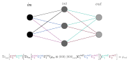

Quantum machine learning is the extension of machine learning to the realm of quantum computation. Still in it's infancy (as are quantum computers), QML is a cutting edge field with, as of yet, undecided foundations. Several different approaches exist, including quantum kernels, support vector machines, and quantum neural networks. Currently implementable and effective models tend to utilize hybrid schemes, wherein classical machine learning techniques interact with quantum submodules to effectively get the best of both worlds (and as a result of limited QC hardware). The overview given below is encapuslated in this presentation.
One proposed framework for quantum neural networks is that discussed in Kerstin Beer, et al's Training Deep Quantum Neural Networks, and the formalism described and discussed below. Note that this formalism works with states represented as density matrices (neccessarily since we intend to take partial traces over hidden layers).
In analogy to the the classical case of neural networks, we essentially have to redefine four key components to define a working model: first, we must specify the appropriate form of data; then, some general architecture that can act and be trained on this data; some way to quantitatively judge a given model's performance on the training data; and finally, some way to accomplish this training.
The most general task a quantum circuit can do is perform some arbitrary unitary operation on an arbitrary dimensional space. Hence, an effective quantum neural network should aim to approximate an arbitrary unitary given some set of data \( (\vert\psi_i\rangle, V \vert \psi_i\rangle) \) where \(i\) ranges from 1 to \(N\) for \(N\) points of data. Effectively, then, our quantum network should be able to 'learn' to approximate what unitary operation is being performed given \(N\) 'snapshots' of it's action on some set of states.
The overall action of the network is composed of layer-by-layer composition of the transition map \(\epsilon^{\ell}\) for each layer \(\ell\) s.t. \(in\leq \ell\leq out\). Each layer may have a different number of qubits \(m_{\ell}\). Explicitly, the \(\ell\)-th layer's transition map takes the form: \[ \epsilon^{\ell-1}(\rho_{\ell-1})= \text{Tr}_{\ell-1}\left[ \left(\prod_{m=1}^{m_{\ell}}U^{\ell}_{m}\right)\left(\left(\vert 0\rangle ^{\otimes m_{\ell}}\langle 0\vert^{\otimes m_{\ell}}\right)_{\ell}\otimes \rho_{\ell-1}\right) \left(\prod_{m=m_{\ell}}^{1}U^{\ell\dagger}_{m}\right) \right] = \rho_{\ell} \] And, hence, a total circuit of \(L\) layers returns \(\rho_{out}\), defined below, for some given input state \(\rho_{in}\). \[ \rho_{out} = \epsilon^{out}\left(\epsilon^{L}\left(\epsilon^{L-1}\left( ... \epsilon^{1}\left(\rho_{in}\right) ...\right)\right)\right) \]
For each layer \(\ell\),
1. The next layer's \(m_{\ell}\) qubits are prepared in the initial state \(\vert 0\rangle ^{\otimes m_{\ell}}\langle 0\vert^{\otimes m_{\ell}}_{\ell}\) and tensor producted with the previous layer's output \(\rho_{\ell-1}\). \[ \rho_{\ell}' = \left(\vert 0\rangle ^{\otimes m_{\ell}}\langle 0\vert^{\otimes m_{\ell}}\right)_{\ell}\otimes \rho_{\ell-1} \] 2. The \(\ell\)-th layer's \(m_{\ell}\) associated unitary matrices \(U^{\ell}_m\) are applied to this tensor product state (from top to bottom). \[ \rho_{\ell}'' = \left(\prod_{m=1}^{m_{\ell}}U^{\ell}_{m}\right)\left(\rho_{\ell}'\right) \left(\prod_{m=m_{\ell}}^{1}U^{\ell\dagger}_{m}\right) \] 3. The partial trace over the \( (\ell-1)\)-th layer's Hilbert space is taken, resulting in the output state \(\rho_{\ell}\) of the \(\ell\)-th layer. \[ \rho_{\ell} = \text{Tr}_{\ell-1} [\rho_{\ell}''] \]
We now need a metric by which we may judge the performance of the network on the training data.
The cost is then defined as the fidelity averaged over the output states and the corresponding training data states, as below: \[C =\frac{1}{N}\sum_{i=1}^{N}\langle \psi_i\vert V^{\dagger} \rho_i^{out}V\vert\psi_i\rangle \] Note that, since fidelity is one when two states correspond exactly, we wish to maximize this cost function (as opposed to the usual case in classical machine learning where we wish to minimize the corresponding cost function).
Further, note that this cost function is only applicable for training data based on pure states, for which the fidelity takes an especially nice form. For data based on mixed states, we may replace the above with an averaged fidelity between output and target states. Explicitly then, for this case, we have the following: \[ C=\frac{1}{N}\sum_{i=1}^{N}\left(\text{Tr}\left[\sqrt{\sqrt{\rho_i}\rho^{out}_i\sqrt{\rho_i}}\right]\right)^2 \]
The issue now is training, which can be done iteratively by updating the network's constituent unitaries via the following relation, parametrized by the step size \(\epsilon\): \[U_{m}^{\ell} \rightarrow e^{-\epsilon K_{m}^{\ell}}U_{m}^{\ell}\]
In the original paper, the update matrix acts on it's unitary, much as a generator of a Lie algebra acts on it's associated group elements, as below: \[ U \rightarrow e^{iK}U \] a convention which we've neglected to adopted here. However, by this definition \(K\) must be Hermitian for \(U\) to remain unitary; and in the original paper, \(K\), as defined, is skew-Hermitian. This requires us to either add a complex factor of \(i\) to \(K\) or to remove the factor of \(i\) from the map. We choose to do the latter here. In fact, upon analysis of their associated code, the authors neglect both factors of \(i\) and hence update according to the map \(U\rightarrow e^{-K} U\) as well.
Proof It is well known that products of unitaries are unitary and that the generators of unitaries are Hermitian. However, by the construction of \(K\) (according to the same authors) \(K\) is the commutator of two density matrices, which are Hermitian. However the commutator of two Hermitians is skew-Hermitian.
The adjoint layer is analagous to the backward pass of a classical neural network, and is neccessary for the computation of the training matrix (atleast for the form given above).
Our simple example of the model will consist of a two-qubit input state, one three-qubit hidden layer, and a two-qubit output state, closely following the presentation given by Ramona Wolf.

For a simulated version of this example network in QuTip, download this jupyter notebook or see this report.